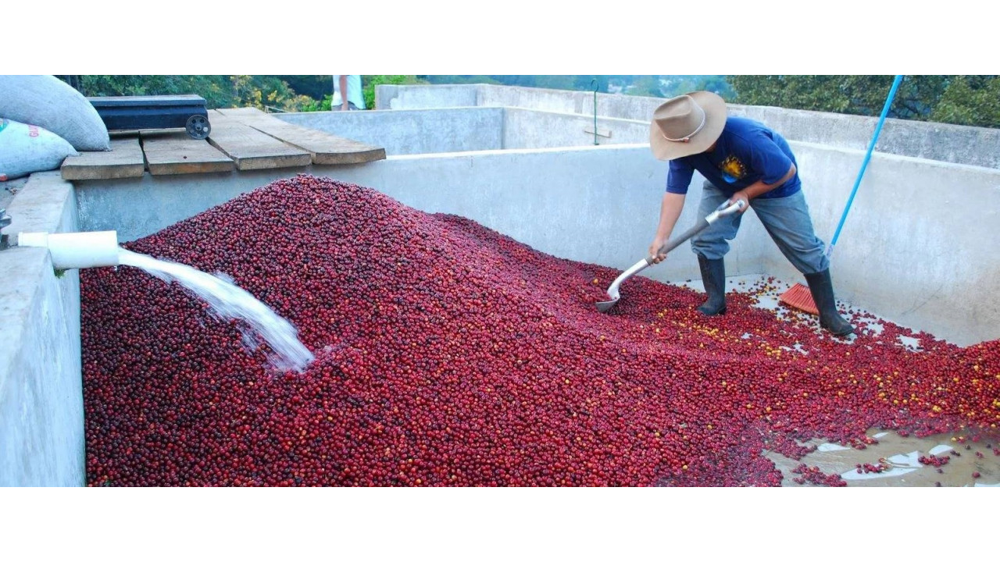
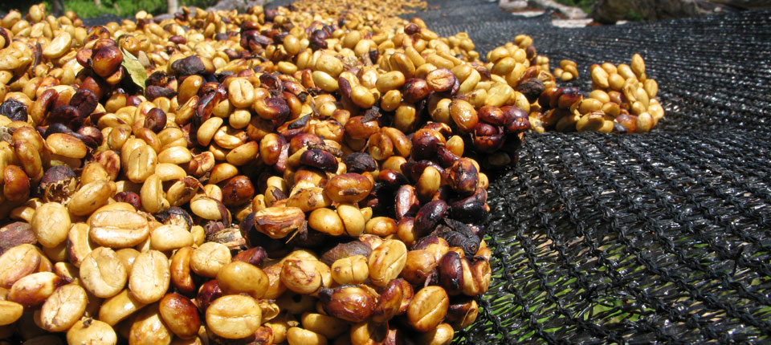

Натуральная обработка – самый древний и простой способ извлечения зерна из ягоды, который использовался с самого начала производства кофе. Высыхая, кожица и мякоть кофейной ягоды передают в зерно все свои соки, масла и сахара, которые образуются в момент ее созревания. Сейчас спелую кофейную ягоду срывают с дерева и кладут на слой пальмовых листьев, расположенных на земле, либо выкладывают на патио — бетонные площадки или африканские кровати — специальные столы с сеткой. Там они сушатся на солнце в течение 2-4 недель. Для более равномерной сушки ягоды тщательно переворачивают и постоянно перекладывают. Если этого не делать, то с одной стороны ягода будет высушенная, с другой – гнилая. Это сильно повлияет на вкус не в лучшую сторону.
После сушки с ягоды удаляют внешнюю кожицу и сушеную мякоть. Перед отправкой покупателю, высушенные зерна отправляются на халлинг для удаления пачмента, после чего их упаковывают в экспортную упаковку. Кофе, обработанный натуральным способом, обычно отличается сладостью и ярко-выраженными плотными вкусовыми оттенками.
Мытый способ обработки. Мытый способ обработки более дорогой и технологически более сложный, чем натуральный. После сбора урожая фермером спелые ягоды увозят на станцию мытой обработки. Чтобы освободить кофейню ягоду от кожицы и мякоти, ее помещают в специальную машину – депульпатор. Он работает как терка, стирающая мякоть с зерен. Отработанная мякоть используется в качестве компоста для деревьев. После удаления первых двух слоев, зерна в клейковине помещаются в резервуары с водой. На этой стадии происходит ферментация – различные бактерии поедают сладкую клейковину, после ее остатки смывают водой. На выходе получается зерно в пачменте, которое помещают, как и в натуральной обработке, на сушку. Сушка занимает, примерно, от 2 до 4 недель, в зависимости от погодных условий. Затем, перед отправкой покупателю, высушенные зерна отправляются на халлинг, где их отшелушивают и упаковывают в экспортную упаковку. Со временем мытая обработка начала вытеснять натуральную: результат мытой обработки можно было частично контролировать, поэтому кофе получался лучше по качеству. При равных условиях выращивания, правильной обжарке и приготовлении такая обработка дает более чистый, читаемый с повышенной кислотностью вкус.
Обработка "ХАНИ". Обработка хани (от англ. honey – мед) – гибрид сухой и мытой обработки. Как и в мытой обработке ягоды после сбора помещаются в депульпатор. После удаления кожицы, зерна в клейковине и с остатками мякоти кладут сушиться на патио. После этого кофе сушат до влажности не более 12 %. Затем, перед отправкой покупателю, высушенные зерна отправляются на халлинг, где их отшелушивают и упаковывают в экспортную упаковку. Такие ягоды при сушке приобретают медовый цвет и становятся липкими. Поэтому способ называется "honey", что означает "мед". Обработка honey соединяет в себе преимущества мытой и сухой обработки. Кофе приобретает чистоту вкуса, кислотность, но без потери сладости.